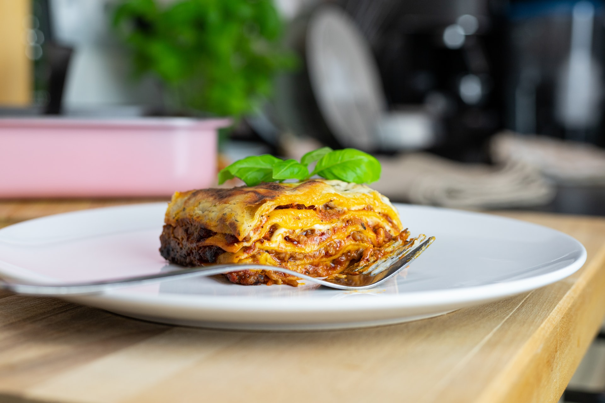

Johnsonville Italian Sausages make it simple to enjoy authentic Italian flavor. This classic lasagna dish is made so much easier when you've got Johnsonville backing you up. The flavor of the Italian sausages will help to make this recipe your new lasagna favorite!
Ingredients
12 lasagna noodles, uncooked
2 tablespoons olive oil
1 (16 ounce) package Johnsonville All Natural Italian Ground Sausage
1 onion
2 cloves garlic, chopped
1 (24 ounce) jar marinara sauce
4 cups ricotta cheese
1 large egg
½ cup grated Parmesan cheese
2 cups fresh spinach, lightly packed and chopped
2 cups shredded mozzarella cheese
Directions
Bring a large pot of salted water to a boil. Cook pasta until al dente. Drain, lightly oil and set aside.
In a medium sauce pan, saute the sausage, crumbling with a wooden spoon, until no longer pink. Add onion and garlic and continue sauteing for another 4 minutes until the sausage is cooked through.
Add marinara sauce to the sausage mixture and set aside. In a medium bowl, blend ricotta cheese, egg, ¼ cup of the parmesan cheese and the chopped spinach; set aside.
Coat a 9×13 baking dish with olive oil and spread 1 cup of the sauce mixture on the bottom.
Top with 3 lasagna noodles. Spread ¼ of the ricotta cheese mixture on the noodles and layer on 1 cup of the sauce mixture. Sprinkle ½ cup mozzarella cheese over this.
Repeat this process three more times starting with the noodles and finish with the remaining ¼ cup of parmesan cheese. Sprinkle with oregano.
Preheat oven to 350℉ and bake for 45 minutes until hot and bubbly. Let stand 10 minutes before cutting.